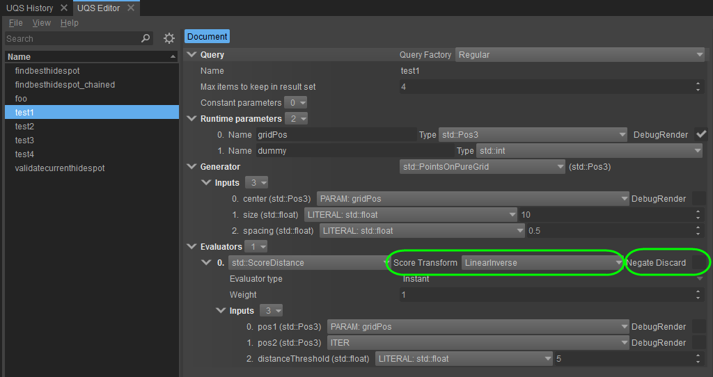

Overview
When running a query, it is possible to adjust the outcome of each evaluator by transforming the score and inverting the discarding decision of an item.
How it Works
When running a query, it uses its evaluators to go through the set of generated items in order to score their fitness or to potentially discard them. As of Engine version 5.4, the outcome of each evaluator can now be "transformed". Transformation can take place on the score of an item and also on fully discarded items.
These two transforms can be specified for each evaluator of a query:

Score Transform:
This option allows you to pick an internal function that will transform the score of an item.
For example, assuming a score would originally describe a linear gradient from [0 .. 1] with maximum output towards 1, it could be mapped onto a sine-wave such that the maximum output would then reside around 0.5. This could be used, for example, when trying to find a good combat position around an enemy such as to prefer positions in the middle of a given minimum and maximum radius around said enemy.
Negate Discard:
This option allows you to decide whether an evaluator, that usually discards an item, shall invert its decision and rather accept the item in question.
For example, given an evaluator that would check whether there is a line-of-sight between a potential combat position and the enemy, it would generally discard the position in question if the underlying physical raycast gets blocked by some geometry. Now, with the option to negate the discarding decision, it's possible to also flip the outcome of such an evaluator, such that it would accept the item if the line-of-sight is blocked. As such, the exact same evaluator could be reused, for example to find a hiding place where the enemy cannot see.